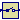
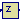

This package contains discrete control blocks with fixed sample period. Every component of this package is structured in the following way:
A sampled data system may consist of components of package Discrete and of every other purely algebraic input/output block, such as the components of packages Modelica.Blocks.Math, Modelica.Blocks.Nonlinear or Modelica.Blocks.Sources.
Extends from Modelica.Icons.Library (Icon for library).
| Name | Description |
|---|---|
|  Sampler | Ideal sampling of continuous signals |
| Zero order hold of a sampled-data system | |
| First order hold of a sampled-data system | |
| Unit Delay Block | |
| Discrete Transfer Function block | |
|  StateSpace | Discrete State Space block |
| Triggered sampling of continuous signals | |
| Compute maximum, absolute value of continuous signal at trigger instants |
 Modelica.Blocks.Discrete.Sampler
Modelica.Blocks.Discrete.Sampler
Samples the continues input signal with a sampling rate defined via parameter samplePeriod.
Extends from Interfaces.DiscreteSISO (Single Input Single Output discrete control block).
| Name | Description |
|---|---|
| samplePeriod | Sample period of component [s] |
| startTime | First sample time instant [s] |
| Name | Description |
|---|---|
| u | Continuous input signal |
| y | Continuous output signal |
The output is identical to the sampled input signal at sample time instants and holds the output at the value of the last sample instant during the sample points.
Extends from Interfaces.DiscreteSISO (Single Input Single Output discrete control block).
| Name | Description |
|---|---|
| samplePeriod | Sample period of component [s] |
| startTime | First sample time instant [s] |
| Name | Description |
|---|---|
| u | Continuous input signal |
| y | Continuous output signal |
The output signal is the extrapolation through the values of the last two sampled input signals.
Extends from Interfaces.DiscreteSISO (Single Input Single Output discrete control block).
| Name | Description |
|---|---|
| samplePeriod | Sample period of component [s] |
| startTime | First sample time instant [s] |
| Name | Description |
|---|---|
| u | Continuous input signal |
| y | Continuous output signal |
This block describes a unit delay:
1
y = --- * u
z
that is, the output signal y is the input signal u of the previous sample instant. Before the second sample instant, the output y is identical to parameter yStart.
Extends from Interfaces.DiscreteSISO (Single Input Single Output discrete control block).
| Name | Description |
|---|---|
| y_start | Initial value of output signal |
| samplePeriod | Sample period of component [s] |
| startTime | First sample time instant [s] |
| Name | Description |
|---|---|
| u | Continuous input signal |
| y | Continuous output signal |
The discrete transfer function block defines the transfer function between the input signal u and the output signal y. The numerator has the order nb-1, the denominator has the order na-1.
b(1)*z^(nb-1) + b(2)*z^(nb-2) + ... + b(nb)
y(z) = -------------------------------------------- * u(z)
a(1)*z^(na-1) + a(2)*z^(na-2) + ... + a(na)
State variables x are defined according to controller canonical form. Initial values of the states can be set as start values of x.
Example:
Blocks.Discrete.TransferFunction g(b = {2,4}, a = {1,3});
results in the following transfer function:
2*z + 4
y = --------- * u
z + 3
Extends from Interfaces.DiscreteSISO (Single Input Single Output discrete control block).
| Name | Description |
|---|---|
| b[:] | Numerator coefficients of transfer function. |
| a[:] | Denominator coefficients of transfer function. |
| samplePeriod | Sample period of component [s] |
| startTime | First sample time instant [s] |
| Name | Description |
|---|---|
| u | Continuous input signal |
| y | Continuous output signal |
 Modelica.Blocks.Discrete.StateSpace
Modelica.Blocks.Discrete.StateSpace
The discrete state space block defines the relation between the input u=inPort.signal and the output y=outPort.signal in state space form:
x = A * pre(x) + B * u
y = C * pre(x) + D * u
where pre(x) is the value of the discrete state x at the previous sample time instant. The input is a vector of length nu, the output is a vector of length ny and nx is the number of states. Accordingly
A has the dimension: A(nx,nx),
B has the dimension: B(nx,nu),
C has the dimension: C(ny,nx),
D has the dimension: D(ny,nu)
Example:
parameter: A = [0.12, 2;3, 1.5]
parameter: B = [2, 7;3, 1]
parameter: C = [0.1, 2]
parameter: D = zeros(ny,nu)
results in the following equations:
[x[1]] [0.12 2.00] [pre(x[1])] [2.0 7.0] [u[1]]
[ ] = [ ]*[ ] + [ ]*[ ]
[x[2]] [3.00 1.50] [pre(x[2])] [0.1 2.0] [u[2]]
[pre(x[1])] [u[1]]
y[1] = [0.1 2.0] * [ ] + [0 0] * [ ]
[pre(x[2])] [u[2]]
Extends from Interfaces.DiscreteMIMO (Multiple Input Multiple Output discrete control block).
| Name | Description |
|---|---|
| A[:, size(A, 1)] | Matrix A of state space model |
| B[size(A, 1), :] | Matrix B of state space model |
| C[:, size(A, 1)] | Matrix C of state space model |
| D[size(C, 1), size(B, 2)] | Matrix D of state space model |
| samplePeriod | Sample period of component [s] |
| startTime | First sample time instant [s] |
| nin | Number of inputs |
| nout | Number of outputs |
| Name | Description |
|---|---|
| u[nin] | Continuous input signals |
| y[nout] | Continuous output signals |
 Modelica.Blocks.Discrete.TriggeredSampler
Modelica.Blocks.Discrete.TriggeredSampler
Samples the continuous input signal whenever the trigger input signal is rising (i.e., trigger changes from false to true) and provides the sampled input signal as output. Before the first sampling, the output signal is equal to the initial value defined via parameter y0.
Extends from Interfaces.DiscreteBlockIcon (Graphical layout of discrete block component icon).
| Name | Description |
|---|---|
| y_start | initial value of output signal |
| Name | Description |
|---|---|
| u | Connector with a Real input signal |
| y | Connector with a Real output signal |
| trigger |
 Modelica.Blocks.Discrete.TriggeredMax
Modelica.Blocks.Discrete.TriggeredMax
Samples the continuous input signal whenever the trigger input signal is rising (i.e., trigger changes from false to true). The maximum, absolute value of the input signal at the sampling point is provided as output signal.
Extends from Interfaces.DiscreteBlockIcon (Graphical layout of discrete block component icon).
| Name | Description |
|---|---|
| u | Connector with a Real input signal |
| y | Connector with a Real output signal |
| trigger |